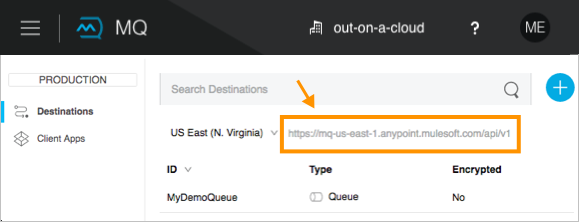

To Set Up Studio for the MQ Connector
To Install the Anypoint MQ Connector in Studio
-
In Studio, click Help > Install New Software.
-
Click the drop-down menu for Work with and select Anypoint Connectors Update Site.
-
Expand Community and click Anypoint MQ Connector:

-
Click Next.
-
Follow the prompts to install the connector and restart Studio when requested.
Note: See To Configure Client Applications to register an application and get the client ID and client secret that you need to configure the Anypoint MQ Connector.
To Add a Client App to Studio
-
In Anypoint Platform, click MQ > Client Apps:

-
Create a client app. Note the Client ID and Client Secret values. We use these later when we configure the Anypoint MQ connector in Anypoint Studio.
To Configure with the Visual Editor
-
In Studio, click File > New > Mule Project.
-
Search for "http" and drag the HTTP connector to the Studio Canvas. Click the HTTP connector, and click the green plus sign to the right of Connector Configuration. Click OK to accept the defaults. In the HTTP properties window, set the Path to
/mq/{messageId}. -
Search for "mq" and drag the Anypoint MQ connector to the canvas. If you cannot find this connector, return to [Installing the Anypoint MQ Connector] and ensure you installed the connector.
-
Click the green plus sign to the right of Connector Configuration.
-
In the Global Element Properties window:
-
Copy the Anypoint Platform > MQ > Client App > Client App ID value to Studio’s Client ID field.
-
Copy the Client App > Client Secret value to Studio’s Client Secret field. You can ignore the other settings to test your first connector.
If you want to set the remaining fields or tabs, see [Advanced Global Element Properties].
-
Click OK.
-
-
Click the Operation field and specify an operation such as Publish or Consume.
-
Specify the Destination as the name of the queue or message exchange that you set in Anypoint Platform.

About Global Element Properties
The General tab fields are:
| Studio Field | Description |
|---|---|
Name |
Configuration name. Required: Yes |
Client Mode |
Specifies whether the Anypoint MQ connector uses an improved HTTP client (SYNC, the default) or a deprecated HTTP client provided by the Mule Runtime (MULE). The improved HTTP client can be either synchronous or asynchronous. Possible values:
Required: No |
Provider: |
Sets a provider configuration for the current app consisting of the URL, Client App ID, and Client Secret. Required: Yes |
URL |
URL shown in Anypoint Platform. Required: Yes

|
Client App ID |
From Anypoint Platform > MQ > Client Apps. Click the app and copy the Client App ID value. Required: Yes |
Client Secret |
From Anypoint Platform > MQ > Client Apps. Click the app and copy the Client Secret value. Required: Yes |
Use Global Provider Config |
Sets the URL, Client App ID, and Client Secret for all apps. Required: No |
Basic Settings: |
Number of redeliveries to try in case a message fails. -1 indicates that Anypoint MQ retry indefinitely. If set to the default value of -1, this parameter does not appear in the XML flow. Required: No |
(Basic Settings menu in Studio) Defines how the Anypoint MQ messages are acknowledged when the message are removed from being inflight messages. If set to the default value of AUTO, this parameter does not appear in the XML flow. Possible values are:
Required: No |
|
Acknowledgement Timeout |
(Basic Settings menu in Studio) When you take an Anypoint MQ message from a queue, the broker puts it in flight, and the message remains in that state until the ACK is performed (application reads the message and Anypoint MQ deletes it), or the Acknowledgement Timeout is reached. If ACK is performed, then the message is removed from the queue, if Acknowledgement Timeout is reached, the message returns to the queue. If set to the default
value of Required: No |
Polling Time |
(Basic Settings menu in Studio) Maximum time in milliseconds to wait for the expected message or messages. If set to the default value of Required: No |
Threading Profile Settings |
Define threading profile behavior or use default worker threading profile. See Tuning Performance. The threading profile options let you optimize connector performance for use with Anypoint MQ. Note: After setting the threading profile fields, save your project, click Configuration XML, change the name of the threading profile statement to start with anypoint-mq, and switch the order of the statement with the anypoint-mq:provider statement in the anypoint-mq:config block. The location can be N. Virginia (us-east-1), Ireland (eu-west-1), Singapore (ap-southeast-1), Sydney (ap-southeast-2), or Oregon (us-west-2). This example shows how the finished statements may appear: Required: No |
Use custom worker threading profile |
See Tuning Performance. Required: No |
Max Active Threads |
The maximum number of threads to use. See Tuning Performance. Required: No |
Max Idle Threads |
The maximum number of idle or inactive threads that can be in the pool before they are destroyed. See Tuning Performance. The thread pool does not grow from Max Idle Threads towards Max Active Threads unless the queue is completely filled up. Required: No |
Thread TTL |
Thread time to live duration. Required: No |
Pool Exhausted Action |
When the maximum pool size or queue size is bounded, this value determines how to handle incoming tasks. Possible values are:
Required: No |
Thread Wait Timeout |
Thread wait timeout in milliseconds. Required: No |
Max Buffer Size |
Max buffer size. Required: No |
About the Studio TLS/SSL and Proxy Tabs
The TSL/SSL and Proxy tabs share the same information as the HTTP Connector.
About the Studio Prefetch Tab
Lets you set the number of messages to receive at once when asking for messages. The response can contain fewer messages than this number depending on the Polling Time (pollingTime in XML) setting.
When you subscribe a flow to an Anypoint MQ queue, the flow pool regularly polls the queue looking for messages. This operation can be very time consuming. In order to avoid delays, prefetch was introduced. This is a component placed between the flow and the Anypoint MQ queue that polls the queue regularly, but without processing the pooled messages. You can change these values depending on your site’s performance and use case needs.
The Prefetch tab fields are:
| Value | Description |
|---|---|
Fetch Size |
Number of messages to prefetch. |
Fetch Timeout |
Maximum duration in milliseconds to wait for the required amount of messages. When this time elapses, the response is sent with as many messages as taken during the period. |
Frequency |
The duration in milliseconds to execute the retrieve operation when the prefetch queue is not empty. |
Note: For best performance, set Fetch Size to 10 (maximum value) and reduce Frequency to increase the polling time and the resulting dequeuing of transactions per second (TPS). You can increase Fetch Timeout if message processing is slow. For example, if processing takes 5 seconds, set the Fetch Timeout to at least double this time (10000 milliseconds).
Apart from these performance-related parameters, it is important to properly configure the Acknowledgement Mode.
The equivalent XML for the Prefetch default values is:
<anypoint-mq:prefetch fetchSize="10" fetchTimeout="1000" frequency="5000"/>About Basic Settings
| Studio Field | Description |
|---|---|
Operation |
Operation that this connector instance performs. Possible values:
Required: Yes |
About Publisher Settings
| Studio Field | Description |
|---|---|
Destination |
Queue or message exchange name. Required: Yes |
Message ID |
Optional ID of a message to publish. When publishing to FIFO queues, if you specify a custom Message ID and the Message ID is the same on multiple messages, the messages with the same Message ID cannot be redelivered. For applications such as those used in transactional use cases where messages need to be processed exactly once, Anypoint MQ supports exactly once delivery of messages when messages are published to FIFO queues. FIFO queues supports deduplication of messages. For example, if you retry sending a message with the same message ID within the 5-minute deduplication interval to a FIFO queue, Anypoint MQ guarantees the messages with the same message ID are retrieved and processed exactly once by the subscriber. When building applications requiring this feature on Anypoint Studio, you can set the message ID in publisher settings inside Anypoint MQ connector. If a message ID is not explicitly set, MQ auto generates a unique message ID for each message that’s sent to a queue. Required: No |
Send Outbound Properties |
Send properties when publishing. Required: Yes |
Send Content Type |
Send content type when publishing. Required: Yes |
Property |
Optional property content to set for publish. Required: No |
Value |
Optional value content to set for publish. Required: No |
About Consumer Settings
| Studio Field | Description |
|---|---|
Destination |
Queue name. Required: Yes |
Acknowledgement Mode |
If you use
the Anypoint MQ connector as a message processor, the operations are Required: No |
Acknowledgement Timeout |
Duration in milliseconds until the acknowledgement mode times out. Note: This value overrides the Acknowledgement Timeout field in the Global Elements Properties Basic Settings. |
Polling Time |
Duration in milliseconds that the MQ connector polls the queue or message exchange for messages. Note: This value overrides the Polling Time field in the Global Elements Properties Basic Settings. The default is 10000 milliseconds (10 seconds). |
Reconnection Wait Time |
Duration in milliseconds for how long to wait before MQ attempts to re-establish a connection to the MQ backend server. The default is 3000 milliseconds (3 seconds). |
Reconnection Attempts |
Number of times MQ should attempt to re-establish a connection to the MQ backend server. -1 means try forever. |
About Subscriber Settings
| Studio Field | Description |
|---|---|
Destination |
Queue name. Required: Yes |
Acknowledgement Mode |
When the MQ connector is used as an entry point, the mode options are Notes:
Required: No |
Acknowledgement Timeout |
Duration in milliseconds until the acknowledgement mode times out. Note: This value overrides the Acknowledgement Timeout field in the Global Elements Properties Basic Settings. |
Polling Time |
Duration in milliseconds that the MQ connector polls a queue for messages. Note: This value overrides the Polling Time field in the Global Elements Properties Basic Settings. |
Reconnection Wait Time |
Duration in milliseconds for how long to wait before MQ attempts to re-establish a connection to the MQ backend server. The default is 3000 milliseconds (3 seconds). |
Reconnection Attempts |
Number of times MQ should attempt to re-establish a connection to the MQ backend server. -1 means try forever. |
Anypoint MQ XML Examples
This section provides these topics:
Example 1: MQ and DataWeave
The following example illustrates the use of the Anypoint MQ connector with DataWeave to transform a Mule message to JSON:
<?xml version="1.0" encoding="UTF-8"?>
<mule xmlns:dw="http://www.mulesoft.org/schema/mule/ee/dw"
xmlns:anypoint-mq="http://www.mulesoft.org/schema/mule/anypoint-mq" xmlns:http="http://www.mulesoft.org/schema/mule/http" xmlns="http://www.mulesoft.org/schema/mule/core" xmlns:doc="http://www.mulesoft.org/schema/mule/documentation"
xmlns:spring="http://www.springframework.org/schema/beans"
xmlns:xsi="http://www.w3.org/2001/XMLSchema-instance"
xsi:schemaLocation="http://www.mulesoft.org/schema/mule/ee/dw http://www.mulesoft.org/schema/mule/ee/dw/current/dw.xsd
http://www.springframework.org/schema/beans http://www.springframework.org/schema/beans/spring-beans-current.xsd
http://www.mulesoft.org/schema/mule/core http://www.mulesoft.org/schema/mule/core/current/mule.xsd
http://www.mulesoft.org/schema/mule/http http://www.mulesoft.org/schema/mule/http/current/mule-http.xsd
http://www.mulesoft.org/schema/mule/anypoint-mq http://www.mulesoft.org/schema/mule/anypoint-mq/current/mule-anypoint-mq.xsd">
<anypoint-mq:config name="Anypoint_MQ_Configuration" doc:name="Anypoint MQ Configuration">
<anypoint-mq:provider url="https://mq-us-east-1.anypoint.mulesoft.com/api/v1" clientId="<id>" clientSecret="<secret>"/>
</anypoint-mq:config>
<flow name="producerFlow">
<poll doc:name="Poll">
<dw:transform-message doc:name="Create Customer">
<dw:set-payload><![CDATA[%dw 1.0
%output application/json
---
{
"firstName" : "Joe",
"lastName" : "Schmoe",
"company" : "Acme, Inc"
}]]></dw:set-payload>
</dw:transform-message>
</poll>
<anypoint-mq:publish config-ref="Anypoint_MQ_Configuration" destination="MyExchange" doc:name="Anypoint MQ">
<anypoint-mq:message-builder messageId="mq42"/>
</anypoint-mq:publish>
</flow>
</mule>Example 2: MQ and Object Store
The following example shows the use of the Anypoint MQ connector to consume information from an object store.
<?xml version="1.0" encoding="UTF-8"?>
<mule xmlns:anypoint-mq="http://www.mulesoft.org/schema/mule/anypoint-mq"
xmlns:objectstore="http://www.mulesoft.org/schema/mule/objectstore"
xmlns:dw="http://www.mulesoft.org/schema/mule/ee/dw"
xmlns:http="http://www.mulesoft.org/schema/mule/http"
xmlns:tracking="http://www.mulesoft.org/schema/mule/ee/tracking"
xmlns="http://www.mulesoft.org/schema/mule/core"
xmlns:doc="http://www.mulesoft.org/schema/mule/documentation"
xmlns:spring="http://www.springframework.org/schema/beans"
xmlns:xsi="http://www.w3.org/2001/XMLSchema-instance"
xsi:schemaLocation="http://www.mulesoft.org/schema/mule/objectstore http://www.mulesoft.org/schema/mule/objectstore/current/mule-objectstore.xsd
http://www.springframework.org/schema/beans http://www.springframework.org/schema/beans/spring-beans-current.xsd
http://www.mulesoft.org/schema/mule/core http://www.mulesoft.org/schema/mule/core/current/mule.xsd
http://www.mulesoft.org/schema/mule/http http://www.mulesoft.org/schema/mule/http/current/mule-http.xsd
http://www.mulesoft.org/schema/mule/ee/dw http://www.mulesoft.org/schema/mule/ee/dw/current/dw.xsd
http://www.mulesoft.org/schema/mule/ee/tracking http://www.mulesoft.org/schema/mule/ee/tracking/current/mule-tracking-ee.xsd
http://www.mulesoft.org/schema/mule/anypoint-mq http://www.mulesoft.org/schema/mule/anypoint-mq/current/mule-anypoint-mq.xsd">
<objectstore:config name="ObjectStore_Configuration" partition="employees" doc:name="ObjectStore: Configuration"/>
<http:listener-config name="HTTP_Listener_Configuration" host="0.0.0.0" port="8081" doc:name="HTTP Listener Configuration"/>
<anypoint-mq:config name="Anypoint_MQ_Configuration" doc:name="Anypoint MQ Configuration">
<anypoint-mq:provider url="https://mq-us-east-1.anypoint.mulesoft.com/api/v1" clientId="<ID>" clientSecret="<SECRET>"/>
</anypoint-mq:config>
<flow name="objectstore-store-flow">
<http:listener config-ref="HTTP_Listener_Configuration" path="/store" doc:name="HTTP"/>
<objectstore:store config-ref="ObjectStore_Configuration" key="#[message.inboundProperties.'http.query.params'.key]" value-ref="#[message.inboundProperties.'http.query.params'.value]" doc:name="ObjectStore"/>
<anypoint-mq:consume config-ref="Anypoint_MQ_Configuration" destination="MyDemoQueue" doc:name="Anypoint MQ"/>
<set-payload value= "OK" doc:name="Set Payload"/>
</flow>
<flow name="objectstore-retrieve-employee-flow">
<http:listener config-ref="HTTP_Listener_Configuration" path="/retrieve" doc:name="HTTP"/>
<objectstore:retrieve config-ref="ObjectStore_Configuration" key="#[message.inboundProperties.'http.query.params'.key]" doc:name="Retrieve"/>
<logger message="Value: #[payload]" level="INFO" doc:name="Log"/>
<set-payload value="Value : #[payload]" doc:name="Show"/>
</flow>
</mule>About Common XML Elements
| XML Element | Description |
|---|---|
doc:name |
Configuration name. Required: Yes |
clientMode |
Specifies whether the Anypoint MQ connector uses an improved HTTP client (SYNC, the default) or a deprecated HTTP client provided by the Mule Runtime (MULE). The improved HTTP client can be either synchronous or asynchronous. Possible values:
Required: No |
provider |
Sets a provider configuration for the current app consisting of the URL, Client App ID, and Client Secret. Required: Yes |
url |
URL shown in Anypoint Platform > MQ. Required: Yes XML Example: |
clientId |
From Anypoint Platform > MQ > Client Apps. Click the app and copy the Client App ID value. Required: Yes |
clientSecret |
From Anypoint Platform > MQ > Client Apps. Click the app and copy the Client Secret value. Required: Yes |
provider-ref |
Sets the URL, Client App ID, and Client Secret for all apps. Required: No |
maxRedelivery |
Number of redeliveries to try in case a message fails. -1 indicates that Anypoint MQ retry indefinitely. If set to the default value of -1, this parameter does not appear in the XML flow. Required: No |
acknowledgementMode |
Defines how the Anypoint MQ messages are acknowledged when the message are removed from being inflight messages. If set to the default value of AUTO, this parameter does not appear in the XML flow. Possible values are:
Required: No |
acknowledgementTimeout |
When you take an Anypoint MQ message from a queue, the broker puts it in flight, and the message remains in that state until the ACK is performed (application reads the message and Anypoint MQ deletes it), or the Acknowledgement Timeout is reached. If ACK is performed, then the message is removed from the queue, if Acknowledgement Timeout is reached, the message returns to the queue. If set to the default
value of Required: No |
pollingTime |
Maximum time in milliseconds to wait for the expected message or messages. If set to the default value of Required: No |
worker-threading-profile |
Define threading profile behavior or use default worker threading profile. See Tuning Performance. The threading profile options let you optimize connector performance for use with Anypoint MQ. Note: After configuring worker-threading-profile, change the name of the statement to start with anypoint-mq, and switch the order of the statement with the anypoint-mq:provider statement in the anypoint-mq:config block. This example shows how the finished statements should appear: Required: No |
maxThreadsActive |
The maximum number of threads to use. See Tuning Performance. Required: No |
maxThreadsIdle |
The maximum number of idle or inactive threads that can be in the pool before they are destroyed. See Tuning Performance. The thread pool does not grow from Max Idle Threads towards Max Active Threads unless the queue is completely filled up. Required: No |
threadTTL |
Thread time to live duration in milliseconds. Required: No |
poolExhaustedAction |
When the maximum pool size or queue size is bounded, this value determines how to handle incoming tasks. Possible values are:
Required: No |
threadWaitTimeout |
Thread wait timeout in milliseconds. Type: Long |
maxBufferSize |
Max buffer size. Type: Integer |
About Basic XML Elements
| XML Element | Description |
|---|---|
anypoint-mq:<operation> |
Operation that this connector instance performs. Possible values:
Required: Yes |
About Publish XML Elements
| XML Element | Description |
|---|---|
destination |
Queue or message exchange name. Required: Yes |
messageId |
Optional ID of a message to publish. When publishing to FIFO queues, if you specify a custom Message ID and the Message ID is the same on multiple messages, the messages with the same Message ID will not be redelivered. For applications such as those used in transactional use cases where messages need to be processed exactly once, Anypoint MQ supports exactly once delivery of messages when messages are published to FIFO queues. FIFO queues supports deduplication of messages. For example, if you retry sending a message with the same message ID within the 5-minute deduplication interval to a FIFO queue, Anypoint MQ guarantees the messages with the same message ID are retrieved and processed exactly once by the subscriber. When building applications requiring this feature on Anypoint Studio, you can set the message ID in publisher settings inside Anypoint MQ connector. If a message ID is not explicitly set, MQ auto generates a unique message ID for each message that’s sent to a queue. Required: No |
sendOutboundProperties |
Send properties when publishing. Required: Yes |
sendContentType |
Send content type when publishing. Required: Yes |
propertyName |
Optional property content to set for publish. Required: No |
value |
Optional value content to set for publish. Required: No source,xml,linenums] <anypoint-mq:properties>
<anypoint-mq:property propertyName="THisisAProperty" value="4254"/>
</anypoint-mq:properties>
|
About Consume XML Elements
| XML Element | Description |
|---|---|
destination |
Queue or message exchange name. Required: Yes |
acknowledgementMode |
The modes are Required: No |
acknowledgementTimeout |
Duration in milliseconds until the acknowledgement mode times out. Required: No |
pollingTime |
Duration in milliseconds that the MQ connector polls the queue or message exchange for messages. Required: No |
reconnectionWaitTime |
Duration in milliseconds to wait before attempting to reconnect to the MQ backend server. Required: No |
reconnectionAttempts |
Number of attempts to make to re-establish a connection to the MQ backend server. The -1 default value indicates to retry forever. Required: No |
About Subscribe XML Elements
| XML Element | Description |
|---|---|
destination |
Queue name. Required: Yes |
acknowledgementMode |
The mode options are Required: No |
acknowledgementTimeout |
Duration in milliseconds until the acknowledgement mode times out. Required: No |
pollingTime |
Duration in milliseconds that the MQ connector polls a queue for messages. Required: No |
reconnectionWaitTime |
Duration in milliseconds to wait before attempting to reconnect to the MQ backend server. Required: No |
reconnectionAttempts |
Number of attempts to make to re-establish a connection to the MQ backend server. The -1 default value indicates to retry forever. Required: No |